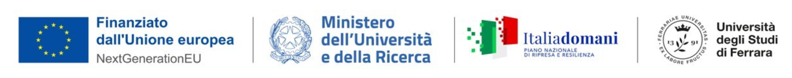

The origin of social inequalities in Northern Italy: clues from ancient genomes

Funded by the European Union - NextGenerationEU - mission 4, component C2, investment 1.1.
PRIN 2022 PNRR P20228M8ZN
Revealing and understanding the dynamics promoting the onset and perpetration of social inequalities in prehistoric societies is a major challenge that has been historically faced evaluating archaeological and anthropological evidence. In recent years the amount of genomic data obtained from ancient remains has dramatically increased, and we also observed the development of methods specifically designed to obtain robust estimates of kinship and ancestry from low coverage data. We now have the unique opportunity to exploit archaeogenomic data to describe, with unprecedented resolution, past population structure and processes such as migration and admixture, but also to shed light on sociocultural dynamics (e.g. lineage-based transmission of social status and wealth) which are the basis of the onset of inequalities. The analysis of ancient genomes may therefore become crucial to infer past social dynamics, with the added value of possibly being informative about demographic events that promoted changes in the social structure. Archaeogenetic has revealed that two major population dynamics within the last 10,000 years extensively impacted the genomic composition of Europeans: the Neolithic expansion and the Bronze-Age migration from Steppe; despite the importance of these events, our genetic understanding is mainly built upon pan-European sampling strategies, resulting in limited knowledge about the impact of these migrations at the level of single societies.
In this project we propose a high-resolution multidisciplinary study of three burial sites in Northeast Italy from Neolithic, Eneolithic and Bronze Age periods, with the specific aim to infer the social and genetic structure and their possible change in this time transect. We will sequence whole genomes of 110 individuals, and thanks to a tight collaboration among archaeologists, anthropologists and geneticists we will provide a detailed reconstruction of the biological relatedness within each funerary context. The kinship analysis, combined with a deep resolution chronology, the fine assessment of grave goods and burial practice, the possible evidence of access to different kinds of dietary resources and individual mobility provided by stable isotopes analysis, will give us information about the presence of inequality between the members of each burial site. We will be able to discern wealth inheritance rules and patterns of social organization, so as to provide a fundamental contribution to understanding how the social structure changed over time. The comparison with ancient European genomes would provide any evidence of correlation between social structure and specific ancestry patterns, whose implication on shaping the genetic background of Northern Italy will be explicitly tested. This project will give us the unique opportunity to shed light on the onset of social inequality in Northern Italy during Prehistory, and on the cultural and biological mechanisms that promoted its development.
Investigating the transition from hunter-gathering to farming in Southern Italy through metagenomic and population genetic analysis of ancient human dental calculus
PRIN 2022 - 2022H3F992
Several archaeological and genetic evidence have shown that the Neolithic transition have deeply affected human recent evolutionary history through the adoption of new ways for foods processing and cooking. Such transition in human dietary habits triggered important changes in the evolution of both humans and of the microbes associated with them. Despite these numerous signals suggest that a strong human microbiome transformation occurred, only very few scientific studies have analysed the composition of past oral microbial communities during this transition, depicting sometimes contrasting scenarios. Moreover, it has been demonstrated that bacterial oral taxa show patterns of phylogenetic diversification able to distinguish coeval populations based on their geographical distribution.
This project will focus on a peculiar archaeological remain: the dental calculus, a highly informative substrate that retains biological information from both host and microbial communities, as well as residues of food and materials introduced in the oral cavity. Combining metagenomic and population genetics analysis on a large dataset of Palaeolithic, Neolithic and Eneolithic individuals from Central-Southern Italy, the project aims to: 1) reconstruct the oral microbiomes of ancient human populations in Italy, to infer changes in diet, health and lifestyle during the Neolithic transition compared to previous time; 2) investigate the evolutionary and demographic processes associated to the Neolithic transition in Italy and in the Mediterranean Europe, through the analysis of genomes of commensal species; 3) developing new methodological approaches for the genetic analysis of dietary components in ancient dental calculus. In particular the project aim to expand the number of samples from Palaeolithic period, exploiting one of the most important pre-Neolithic archaeological site in Italy, in order to explore the oral microbiome variability within ancient hunter-gatherer communities that are still poorly investigated. Moreover, providing a high number of samples from different time transects covering a wide temporal scale in a restricted geographical area will be crucial to unveil the genetic impact of this cultural revolution in finer detail.
The project will be developed through the collaboration of two Research Units (Firenze and Ferrara), that possess research infrastructures and renowned expertise in different fields covering the operative plan of the project (molecular analysis applied on ancient DNA, bioinformatics, metagenomics and population genetics). The complementary skills of the researchers will provide an integrated genetic approach to investigate lifestyle conditions, evolutionary and demographic processes associated to the Palaeolithic-Neolithic transition, from the perspective of ancient human dental calculus. The expected results will have multiple scientific, clinical, cultural, educational and social outcomes.
De novo assembly of ancient metagenomic data from dental calculus to disentangle the Neolithic transition in Southern Europe (MetadeNTin)
The human microbiome plays a crucial role in various physiological processes, including digestion, immune defence, and brain function. Numerous studies have shown that the microbiome can directly and indirectly influence host health through molecular patterns associated with microorganisms and pathogens, as well as by affecting host metabolic activities and the immune system. The microbiome shapes human adaptation processes to new environments and lifestyles, such as the transition from hunter-gatherer to farming. However, there is limited data available on how the human microbiome has changed in composition and function over time, and almost no data on the genetic diversity and structure of bacterial communities throughout major socio-economic and cultural changes in our past. The shift from hunter-gathering to farming during the Neolithic revolution profoundly altered human diets, behaviors, and environments—and likely reshaped our associated microbial communities. Ancient dental calculus provides a unique window into these past microbiomes. Recent advances in ancient metagenomics now allow the recovery of endogenous bacterial DNA and even the reconstruction of ancient microbial genomes (MAGs). However, existing studies are limited in geographic scope, often rely on modern reference genomes, and rarely explore the genetic diversity or population structure of ancient microbes. This project combines ancient metagenomics and population genetics to reconstruct and analyze oral microbiomes from 121 ancient individuals spanning the Palaeolithic to the Bronze Age in Italy. By generating and integrating deeply sequenced dental calculus metagenomes, including 33 newly produced samples, we aim to: (1) reconstruct high-quality ancient metagenome-assembled genomes using dedicated de novo assembly pipelines; (2) highlight shifts in microbial composition through time; (3) infer genetic diversity and structure of bacterial communities through time; and (4) investigate the evolutionary and demographic processes associated to the Neolithic transition. This work will produce the most comprehensive genomic framework to date for understanding how human cultural change shaped the evolution of our oral microbiome.
Crossing the Sea: ancient and modern human genomes to study the evolutionary dynamics of Sicily, Sardinia and Corsica
PRIN 2020 - 2020TACEZR
The Mediterranean Sea played a crucial role in human migration processes during the principal phases and cultural changes associated with the peopling of the European continent. Despite several studies focused on ancient and modern samples from human groups distributed along the Italian Peninsula, the contribution of population dynamics having involved the main islands of the Mediterranean Sea remains largely unknown, principally due to the paucity of paleogenomic data. Sicily, Sardinia and Corsica are characterized by a variety of archaeological records, material culture and traditions, and represented an historical meeting place for several populations since their first colonization. In this context, the analysis of modern and ancient whole genome data may provide fundamental evidence to disentangle past population processes, identify historical genetic structure, and highlight historical/genetic relationship with surrounding populations, that would allow us to significantly improve the knowledge about our past.
This multidisciplinary research program -involving archaeologists, anthropologists, paleoanthropologists and population geneticists- aims to shed light on colonization processes and evolutionary dynamics of Sicily, Sardinia and Corsica through the analysis of ancient and modern genomes. The project feasibility would benefit from recent advances both in ancient DNA sequencing technologies and in the development of sophisticated population genetics methods of analysis of complete genomes data. Archaeologists and anthropologists will accurately select at least 300 human bone samples, spanning from Late Paleolithic to Medieval times, that will be radiocarbon dated and analysed to obtain the first ancient complete genome sequences for these islands. We plan to obtain 60 ancient genomes, from individuals covering a wide temporal scale and a variety of cultural groups. Ancient variation will be compared with 65 new complete genomes from modern inhabitants of the same geographical area, and with data already available for the mainland Italy and Mediterranean Europe. Complete ancient genomes will allow us to reconstruct the genomic history of the islands, since their first colonization, through explicitly hypotheses testing and model-based methods. The same analyses will be separately conducted for Y chromosomes and mitochondrial DNA, so as to identify gender-specific processes. We will also explore the genetic determinants of local biological adaptations (to climate, diseases, diet, or cultural practices) evolved by the ancestors of modern populations currently inhabiting Sicily, Sardinia and Corsica. The outcomes of this project will provide unprecedented insights into the origin, the evolution, the genetic relationship and adaptation dynamics of the populations dwelling in such peculiar areas in the last 20,000 years and will contribute to a more comprehensive understanding of the peopling and evolutionary dynamics of Southern Europe.
1000 Ancient Italian Genomes: Evidence from ancient biomolecules for unravelling past human population Dynamic
PRIN 2017 - 20177PJ9XF
Ancient Italy is characterized by a variety of groups defined by different material culture and traditions. Cultural and biological contributions from outside the country and exchanges between different local groups occurred both in prehistoric and historical times. The research program aims to study the population dynamics that characterized the Italian country with a multidisciplinary approach. Following the information provided by archaeologists and anthropologists, an accurate selection of human bone samples will be radiocarbon dated and then analyzed from a genomic and isotopic point of view, to define the details of past dynamics (i.e. peopling, expansion and migrations) of the country from Paleolithic to the Middle Age. Data from modern samples will be collected from the same areas, in order to compare modern and ancient genetic variation and to shed light on their genealogical relationships through time. Italy, with its geographical position and its different environments, climates and resources, played a key role in the peopling of Europe and of the Mediterranean area. The genomic characterization of 1000 ancient Italian samples would definitely increase the amount of available data from such an important area, thus significantly improving the knowledge about our past.
Evolutionary perspective on health and medicine through the lens of paleogenomics
Disentangling the history of human biological adaptation has fascinated scientists for more than a century. How did humans evolve in response to the new environments they encountered while expanding from Africa? How ancient human populations responded genetically to cultural changes such as the dietary shifts associated with the onset of agriculture? Do our past adaptations have consequences for health and medicine today? Ancient DNA provides a glimpse into the genetic history of humans across the globe over the past millennia. The sequencing of Neanderthal and Denisovan genomes has revealed a complex history of admixture between archaic humans and the ancestors of modern humans. Consequently, archaic sequences became part of the modern human gene pool, possibly influencing life and health of our ancestors, as well as of living individuals. For example, lines of evidence suggest that genetic variants introgressed from archaic hominins may have affected genes associated with immunity, or pharmacogenes - genes involved in drug metabolism - as these genes can relate to changing environments, and beneficial variants may have been positively selected by modern humans. In addition, modern human population dynamics had a pivotal role in shaping the current pattern of genomic diversity. Within the past 10,000 years, we observed two main genetic turnovers in Europe, namely the Neolithic transition and the expansion of farming communities from Anatolia, and the migration from Pontic-Caspian Steppe during Bronze Age. These population dispersals, changing lifestyle and higher population density, may have resulted in increased transmission of pathogens, driving selection of variants in immune response genes, and triggered important changes in the adaptive evolution of our species both at local and global scales. While the availability of thousands of ancient genomes gives us the opportunity to unveil the history of human adaptation at unprecedented depth and precision, the study of the contribution of archaic and ancient alleles to current human health is still in its infancy. Shedding light on adaptive evolutionary dynamics of our species would promote a more comprehensive reconstruction of our past, sharpening the current understanding of our present. The results of this project will pioneer the field of Evolutionary Medicine, thus providing significant contributions to biomedical research and medical applications.